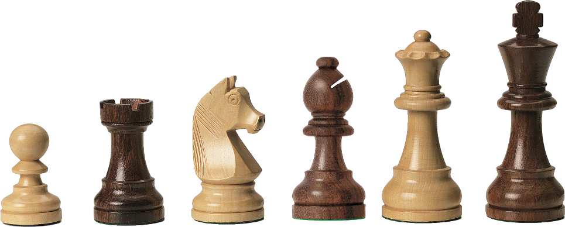

Chess is a two-player strategy board game played on a chessboard, a checkered gameboard with 64 squares arranged in an 8×8 grid.[1] The game is played by millions of people worldwide.
Each player begins with 16 pieces: one king, one queen, two rooks, two knights, two bishops, and eight pawns. Each of the six piece types moves differently, with the most powerful being the queen and the least powerful the pawn.
The objective is to checkmate the opponent's king by placing it under an inescapable threat of capture. To this end, a player's pieces are used to attack and capture the opponent's pieces, while supporting each other. In addition to checkmate, the game can be won by voluntary resignation of the opponent, which typically occurs when too much material is lost, or checkmate appears unavoidable. A game can also in several ways end in a draw. Chess is believed to have originated in India sometime before the 7th century, being derived from the Indian game chaturanga, which is also the likely ancestor of the Eastern strategy games xiangqi, janggi, and shogi. (A minority view holds that chess originated in China.) The pieces assumed their current powers in Spain in the late 15th century; the rules were finally standardized in the 19th century. The first generally recognized World Chess Champion, Wilhelm Steinitz, claimed his title in 1886. Since 1948, the World Championship has been regulated by FIDE, the game's international governing body.
